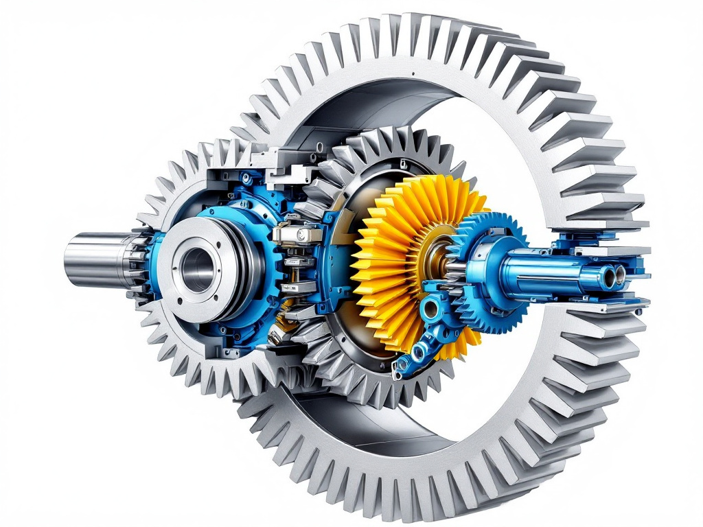
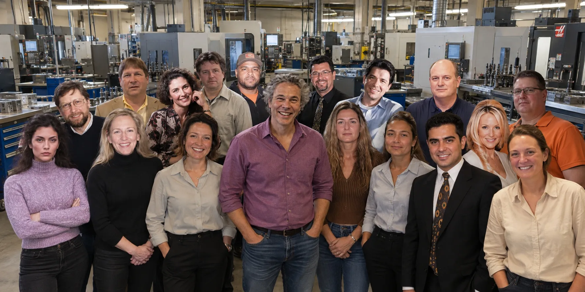

Vad gör vi?
Vi säljer, servar och tillverkar slutväxlar, planetväxlar till över 800 modeller i minigrävare och grävmaskiner i viktklasser från 0,8 till 45 ton.
Varför renovera dina slutväxlar och planetväxlar när en ny är billigare? Det är säkert billigare att byta till en nytt slutväxel eller planetväxel i det långa loppet, och väldigt ofta på kort sikt! Kvaliteten på slutväxlarna och planetväxlarna är trots de låga priserna höga. Vi gör delarna till våra slutväxlar och planetväxlar samt distribuerar dem direkt. Det ger dig en ny slutväxel och planetväxel till bästa pris och högsta kvalitet. Nya kunder uppger att de använde ofta renoverade slutväxlar och planetväxlar. Men det är helt enkelt inte lönsamt med våra låga priser.
Därför att köper i stort sett alla våra kunder en ny slutväxel eller planetväxel när den gamla ger upp. Vi kan serva och konfigurera slutväxlar och planetväxlar för att möta dina krav. Vi kan hjälpa till om du behöver en utbytes eller service på din slutväxel eller planetväxel från växellådorna till populära märken som Bonfiglioli, Brevini, Kayaba, Nachi, Oil Motor, Orbit/Eaton, Sumitomo, SOM, Tong Myung, Teijin Seiki eller Nabtesco.
Har du specifika applikationer som behöver en planetväxel eller en slutväxel kan vi fixa det också. Vi har en egen konstruktionsavdelning med lång erfarenhet i branschen. Tillverkningen sker på plats med några av de allra bästa maskinerna på marknaden. Operatörerna är välutbildade och har lång erfarenhet av tillverkning.
Vår utveckling
Vår utveckling av planetväxlar börjar alltid med kundens applikation. Genom att noggrant analysera vridmoment, varvtalsområde, installationsutrymme och krav på livslängd kan vi avgöra om en planetväxlingslösning är rätt val – och ofta är den det, eftersom den med sina samverkande kuggval ger upp till tre gånger högre vridmoment än en enkelväxel med samma bygghöjd.
I det tidiga skedet arbetar våra konstruktörer med de fyra klassiska komponenterna: solväxeln som matar in effekt, planetväxlarna som fördelar lasten, ringväxeln med sin interna tandning och planetbäraren som överför det utgående momentet. Genom iterativa beräkningar av kuggtal, modul och tandbredd optimeras utväxlingsförhållandet – i standardutförande cirka 4:1 per växelsteg – tills konstruktionen matchar kundens driftprofil.
Innan en enda kuggkap fräses verifierar vi konstruktionen digitalt. Kuggkraftsberäkningar enligt ISO 6336, lagervalkalkyler och FE-analys av planetbärare och hus kombineras med NVH-simuleringar för att minimera ljud och vibrationer. Kuggkorrigeringar som profilförskjutning och kronslipning justeras noggrant för att säkerställa jämn lastfördelning mellan planeterna – en detalj som ofta avgör växelns livslängd.
Därifrån går vi vidare till fysisk provning på våra egna provbänkar. Momentbrytprov, verkningsgradsmätningar som typiskt landar på 97–99 procent per steg, temperaturmätningar och utmattningsprov ger oss kunskap som matas tillbaka till konstruktionsteamet.
Slutligen anpassas konstruktionen för tillverkning. Här handlar allt om precision: härdförda stål med hög yt hårdhet och seg kärna, slipning och hårdbearbetning av komponenterna samt kvalitetssäkring av kuggfel, rundhet och lagrsätens koncentricitet. En planetväxel är nämligen aldrig bättre än sin svagaste komponent. Efter typgodkännande och kundvalidering släpps växeln i serieproduktion och levereras med full dokumentation av prestanda, verkningsgrad och beräknad livslängd.
Vår tes är enkel: en rätt konstruerad planetväxel ger kunden mer moment, mindre utrymme och lägre driftskostnad. Vill du veta hur vi kan anpassa en lösning till just din applikation – hör av dig.

